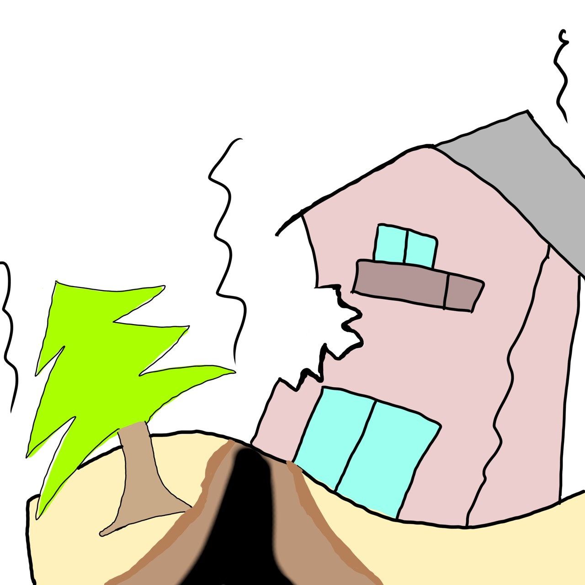
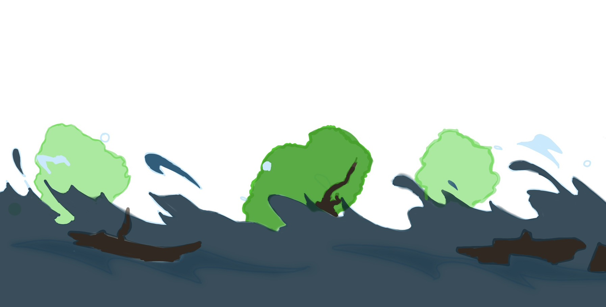

🌏 南海トラフ地震について

- 南海トラフ
- 南海トラフによる被害
- 震度は静岡県から宮崎県の1部で震度7、そのほか周辺の地域で震度6強～6弱
- 津波は関東から九州にかけての太平洋沿岸の広い範囲に10m超の大津波
- 🛡️ 地震の対策方法
- 姿勢を低くする
- 火に近づかない
- 慌てすぎない
- 川や海に近づかない
- 「おかしも」を徹底する
南海トラフ地震は、駿河湾から日向灘沖にかけてのプレート境界を震源域として概ね100～150年間隔で繰り返し発生してきた大規模地震です。
科学的に想定される最大クラスの南海トラフ地震（南海トラフ巨大地震）が発生した場合、静岡県から宮崎県にかけての一部では震度7となる可能性があるほか、関東地方から九州地方にかけての太平洋沿岸の広い地域に10mを超える大津波の襲来が想定されています。
(引用元:気象庁)

🏠 家での対策
🗺️ その他の対策
⚡ 起こった時の対策
👆 クリックして「お・か・し・も」を確認しよう！
お
か
し
も
🚨 緊急2択！地震発生、あなたならどうする？
Q. 部屋にいるとき、激しい揺れが襲ってきた！最初にとる行動は？
🌀 台風について

- 台風の概要
- 台風による被害
- 洪水
- 船舶の乗揚げ事故
- 住宅の全半壊・流失
- 風にあおられて転倒するなどして3人が重軽傷を負ったほか、与那国町で住宅が半壊する被害が1件確認されたことなどが報告された。
- 竹富町・西表島の仲間港では係留されていた約20隻の船が高潮の被害を受けた。
- 竹富町の船浮小中学校と小浜小中学校では停電の影響で給食の食材が使用できなくなり、給食の提供を取りやめ臨時休校にすることになった。
- ☔ 台風の対策方法
- 川や海に近づかない
- 不要不急の外出を控える
日本国内における台風による主な被害は、「風害（暴風）」「水害（大雨・洪水）」「高潮・波浪」の3つに大別され、インフラや農林水産業、人命に甚大な影響を及ぼします。

📰 令和8年台風第30号による被害
🏠 家での対策
🗺️ その他の対策
⚠️ 起こった時の対策
🌀 緊急2択！台風直撃中、あなたならどうする？
Q. 台風が近づいて雨風が激しくなってきた。「田んぼや川の様子が気になる…」どうする？
🎒 実践！防災バッグ詰め込みチャレンジ
制限重量 10.0kg 以内で、本当に必要なものだけをバッグに詰め込もう！（クリックで出し入れ）
現在の重さ: 0.0 / 10.0 kg
防災スコア: 0 点
アイテムを選んでバッグを完成させよう！
📋 あなたの防災準備達成度
チェック数: 0 / 16 項目
🏅 防災準備マスター認定！備えは完璧だ！